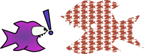
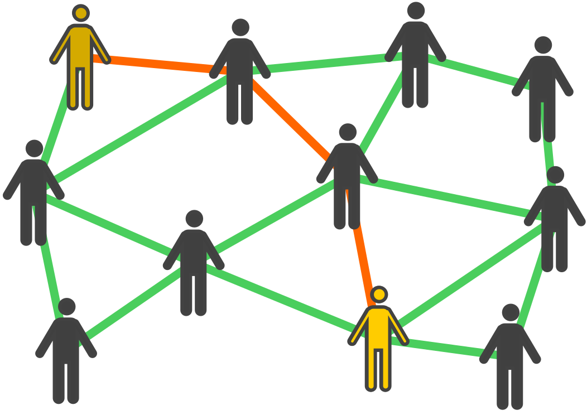

Cooperativisme i comunicacions lliures
Jornades Llibertàries
David García Garzón, Guifibaix
Els barrets


Xarxa ciutadana de comuns
Oberta, lliure i neutra
Construida per voluntaris, empreses, administracions
Llicència viral que garanteix les regles de joc
Coordinats per una Fundació
Els dolents

Els dolents

Els dolents

Els nostres Mr.Burns


Mercats Cautius

Alternatives?
Banca: 


Energia: 

Comunicacions: 
Serveis online: 


Programari: 


Que no existeixen?
Les creem! Imaginació!
Fins i tot a mercats cautius han sortit alternatives

El nostre exemple
Era massa complexe per l'usuari
Complementem guifi.net simplificant-ho al usuari.
No dupliquem
Les grans se les menjen?


Organització


Viralitat


Salts col·lectius
La primera de SomEnergia a Sant Joan


...i van 4.
Paradetes i xerrades
Difusió i demostració


guifibaix.coop


Principi víric:
Si vols passar pels altres nodes, has de deixar que els altres passin pel teu.
Els nodes

La xarxa

Cobertura província

Rodalies: Torrelles

Compartició d'Internet
Sant Joan Despí

El Prat

Telefonia IP

Serveis: Mediateca